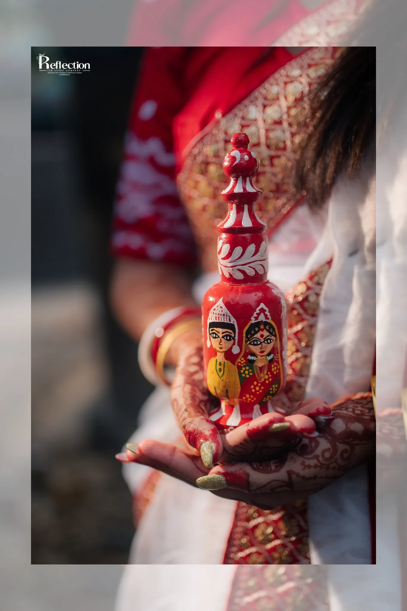
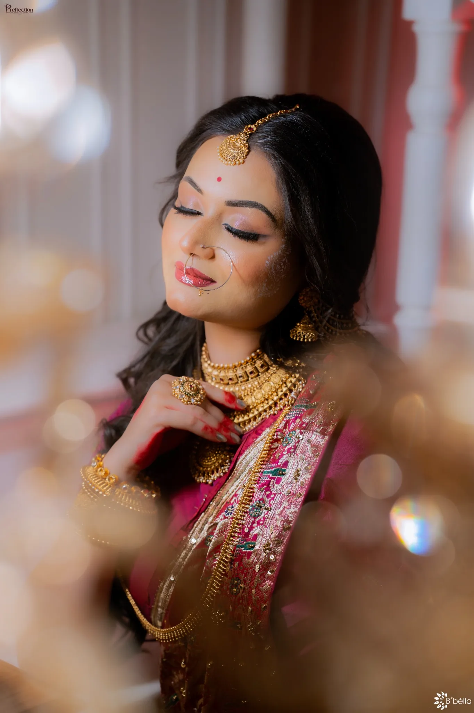
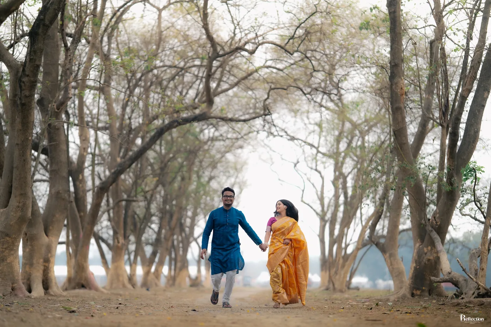
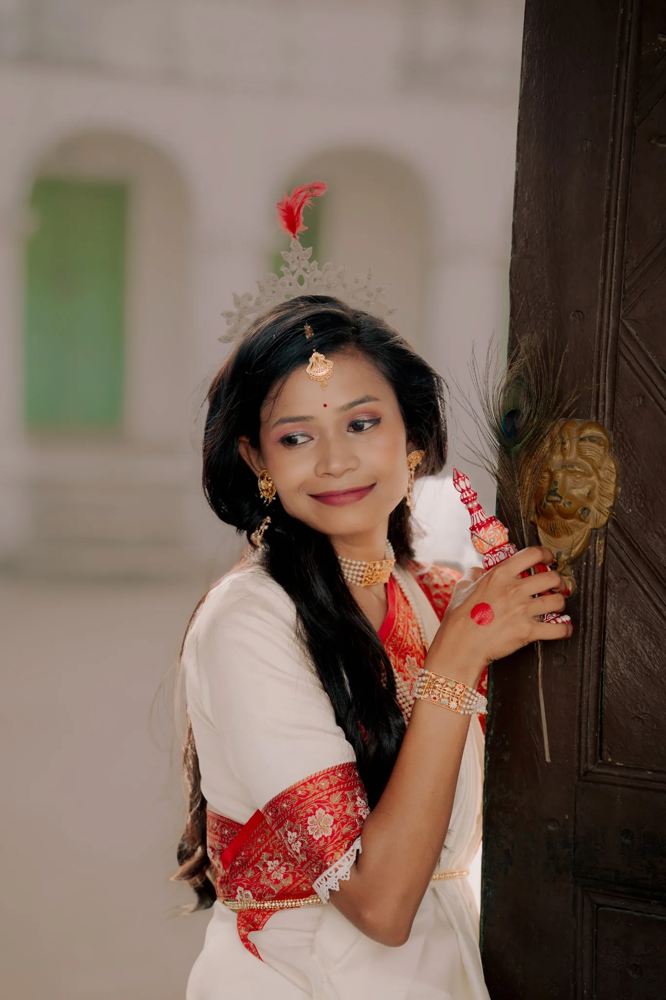
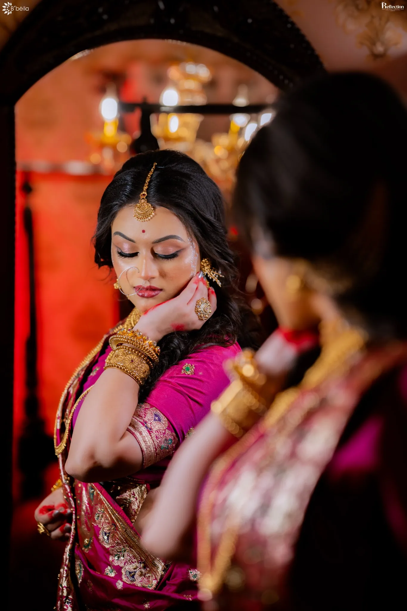
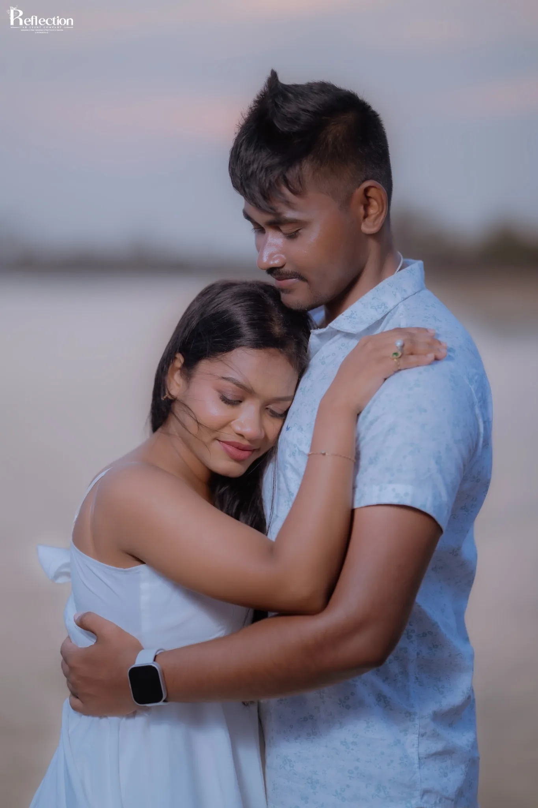

DetailsWedding story
View story ↗Photography, cinematography, design and event experiences created around real people, real places and the details that make a celebration feel like yours.

We design the experience around chapters—not just shots. From preparation to celebration, every frame belongs to a larger story.
The quiet before the day gathers pace.
Tradition, expression and the people beside you.
Movement, laughter, colour and release.
The images you return to long after.

Wedding portraits, couple stories and editorial frames from the work you shared with us—arranged as a living visual diary.








Each service is designed to stand alone—or become part of one connected visual and event experience.
Candid stories, portraits and cinematic films for weddings.
Weddings ↗Editorial and personal branding portraits with direction.
Portraits ↗Commercial images and films for brands, products and spaces.
Commercial ↗Wedding stationery, social creatives and brand-led graphic design.
Design ↗Planning, coordination and visual direction for events.
Events ↗Tell us what you are planning. We will continue the conversation on WhatsApp with the details you provide.
Tell us what you are planning, when it is happening and what you need. Your enquiry will open in WhatsApp with the details already filled in.